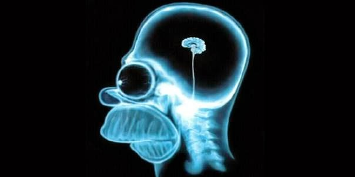
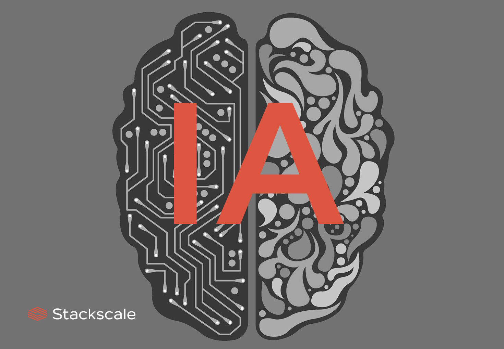
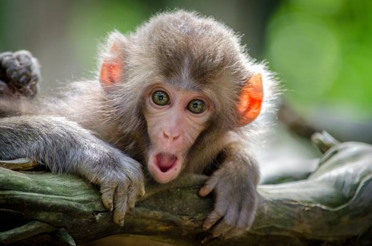

--- CSS
img {
width: 250px;
height: 250px;
}
.cerebro{
width: 250px;
height: auto;
border-width: 25px;
border-style: groove;
border-color: gold
}
.ai-uniforme{
border-width: 25px;
border-color: blue;
border-style: dotted;
}
.ai-variopinto{
border-width: 25px;
border-top-color: red;
border-left-color: yellow;
border-right-color: green ;
border-bottom-color: purple;
border-style: double dashed dotted solid;
}
/*NOTA: border-style se aplicará empezando
por top y e sentido de las agujas
del reloj*/
.monos{
width: auto; /*auto: Establece el tamaño de la dimensión
manteniendo la proporción de la imagen
original una vez especificado el nuevo
tamaño en la nueva dimensión */
height: 150px;
border-width: 20px;
border-style: double;
border-color: green
}
¿Cómo hemos pasado de esto?
¿a esto?

Nosotros no lo sabemos
